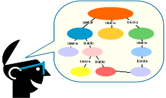

Aqui serão abordados os conceitos relacionados à
saúde e ao sistema prisional, a fim de tornar a
aprendizagem mais fácil!
Sistema Único de Saúde (SUS)
É a denominação do sistema público de saúde no Brasil, que
garante acesso integral, universal e igualitário à população brasileira, perpassando por todos os
níveis de complexidade.
Lei de Execuções Penais (LEP)
A execução penal tem por objetivo efetivar as disposições de
sentença ou decisão criminal e proporcionar condições para a harmônica integração social da
Pessoa Privada de Liberdade (PPL). Ainda afirma que o Estado deve prover assistência a PPL
nos âmbitos material; de saúde; jurídica; educacional; social e religiosa.
Plano Nacional de Atenção Integral à Saúde das Pessoas Privadas de Liberdade (PNSSP)
O
PNSSP foi a primeira legislação específica que trata da saúde das Pessoas Privadas de Liberdade
(PPL) e prevê a inclusão da população penitenciária no SUS, em que a inclusão da população
penitenciária no SUS, garantindo que o direito à cidadania se efetive na perspectiva dos
direitos humanos e contempla, essencialmente, a população recolhida em penitenciárias,
presídios, colônias agrícolas e/ou agroindustriais e hospitais de custódia e tratamento, não
incluindo presos do regime aberto e presos provisórios, recolhidos em cadeias públicas e
distritos policiais
Política Nacional de Atenção Integral à Saúde das Pessoas Privadas de Liberdade no Sistema
Prisional (PNAISP)
Oferece ações de promoção da saúde e prevenção de agravos no sistema
prisional, em todo o itinerário carcerário para toda a população privada de liberdade, e
também para os profissionais destes serviços penais, familiares e outras pessoas relacionadas
ao sistema, como voluntários.
Equipe de Atenção Básica Prisional (EABP)
Equipe multiprofissional responsável para
desenvolver as ações de saúde direcionadas a população privada de liberdade, cuja formação
será relacionado ao número de pessoas privadas de liberdade por unidade prisional; vinculação
dos serviços de saúde a uma unidade básica de saúde no território e ainda a existência de
demandas referentes à saúde mental. Assim, as EABP podem ser classificadas em I, II ou III e
cada equipe poderá ser composta por médico, um enfermeiro, um técnico de enfermagem ou
auxiliar de enfermagem, um cirurgião dentista e um técnico ou auxiliar de saúde bucal, um
psicólogo, um assistente social e um profissional de nível superior dentre as seguintes
ocupações: fisioterapia, psicologia, assistência social, farmácia, terapia ocupacional, nutrição
ou enfermagem e médico psiquiatra.
Unidades Básicas de Saúde Prisional (UBSp)
Estrutura física em que são desenvolvidos os
atendimentos da EABP.
Sistema de Informação Penitenciária (INFOPEN)
Trata-se de um Sistema de Informação em que
contém um banco de dados com informações de todas as unidades prisionais brasileiras,
incluindo dados de infraestrutura, seções internas, recursos humanos, capacidade, gestão,
assistências, população prisional, perfil das pessoas presas, entre outros.
Hora do Exercício
É chegada a hora de exercitar aquilo que você aprendeu
nessa etapa!
E para tornar essa aprendizagem significativa propõe-se
a utilização de métodos ativos!
A proposta de exercício para essa etapa é a criação de
um Mapa Conceitual que utilize os conceitos abordados
anteriormente!

Mapas Conceituais
O mapa conceitual é uma estrutura esquemática para representar um conjunto de conceitos imersos
numa rede de proposições. Ele é considerado como um estruturador do conhecimento, na medida em
que permite mostrar como o conhecimento sobre determinado assunto está organizado na estrutura
cognitiva de seu autor, que assim pode visualizar e analisar a sua profundidade e a extensão. Ele
pode ser entendido como uma representação visual utilizada para partilhar significados, pois explicita
como o autor entende as relações entre os conceitos enunciados. O mapa conceitual se apóia
fortemente na teoria da aprendizagem significativa de Ausubel, que menciona que o ser humano
organiza o seu conhecimento através de uma hierarquização dos conceitos (TAVARES, 2007)*.
Você pode aprender mais sobre como construir mapas conceituais lendo o artigo “Construindo
mapas conceituais”: